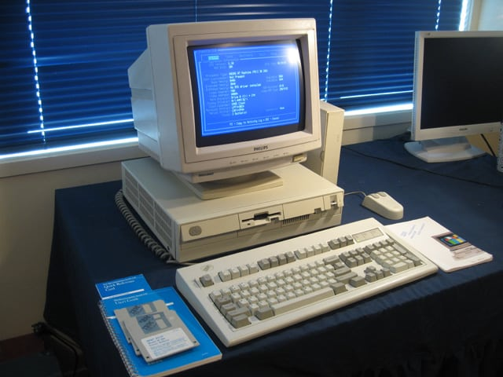

🌟💻Bienvenido al Curso de programacion estructrada y programacion orientada a objetos🌟
"Aprender a programar es aprender a pensar de una manera diferente." - Steve Jobs
📝 Programación Estructurada 📝

¿Que es?
Es un paradigma de programación que surgió en la década de 1960. Este enfoque enfatiza la importancia de escribir código de manera organizada y fácil de entender, utilizando tres estructuras básicas de control:
Historia de la programacion estructurada

El teorema del programa estructurado establece que las tres estructuras básicas: secuencia, selección e iteración, son suficientes para expresar cualquier función computable. Esta idea no es nueva, ya que refleja el ciclo de instrucción de un procesador y el funcionamiento de una máquina de Turing. Se atribuye a un documento de 1966 por Böhm y Jacopini. Sin embargo, el teorema no enseña cómo escribir y analizar programas estructurados, un tema explorado por Dijkstra y otros en los años 60 y 70.
P. J. Plauger, defensor de la programación estructurada, compartió su experiencia con programadores resistentes. Donald Knuth defendió el uso de la sentencia GOTO en ciertos casos. En los 70, Harlan Mills aplicó estas teorías en un exitoso proyecto en New York Times. En 1987, Frank Rubin planteó dudas sobre la sentencia GOTO, generando debates. A finales del siglo XX, la mayoría de los científicos aceptaron la importancia de la programación estructurada, y lenguajes como FORTRAN y COBOL incorporaron estas estructuras.
Uso de las estruturas basicas
Exiten 3 estructuras basicas que son las siguientes:
- 🔄 Secuencia: Ejecutar instrucciones una después de otra
- 🔀 Selección: Tomar decisiones usando estructuras como IF-THEN-ELSE
- 🔁 Iteración: Repetir acciones usando bucles como WHILE y FOR
Conceptos basicos
Ahora te vamos a enseñar 4 conceptos basicos que se usa en la programacion estructrada que son 4 que te explicaremos
Variable
Un contenedor o caja que nos permite almacenar información en la memoria del ordenador para su uso posterior. Estos datos pueden ser de varios tipos, como números, texto o valores verdadero/falso.
nombre = "Boris" # Almacena texto (string)
edad = 20 # Almacena un número entero (integer)
altura = 1.77 # Almacena un número decimal (float)
es_estudiante = True # Almacena un valor Booleano que es (true o false)
Condicionales
Estas son las estructuras que permiten tomar decisiones en nuestro código, es decir, ejecutar diferentes bloques de código dependiendo de si se cumple una condición un ejemplo con la temperatura de una persona
temperatura = 38
if temperatura >= 37.5:
print("Tienes fiebre")
else:
print("Temperatura normal")
🌀Bucles🌀
Los bucles permiten repetir un bloque de código varias veces pero hay 2 tipos de bucles que son:
Vamos con el ejemplo de bucle for
# Imprime números del 0 al 4
for i in range(5):
print(i)
# Recorrer una lista
frutas = ["manzana", "pera", "uva","cereza"]
for fruta in frutas:
print(f"Me gusta la {fruta}")
# For con range específico
for num in range(0, 21): # del 1 al 20
print(num)
Vamos con el ejemplo del bucle while
# Ejemplo con contraseña
contraseña = ""
while contraseña != "boris777":
contraseña = input("Ingresa la contraseña: ")
print("¡Acceso concedido!")
Funciones
Las funciones son bloques de código reutilizable que realizan una tarea en específica =D :
def saludar():
print("Hola guap@")
# Llamar la función
saludar()
Modularidad
El principio es dividir el programa en partes más pequeñas (módulos) que puedan funcionar independientemente. Cada módulo maneja una tarea específica, haciendo que el código sea más organizado, reutilizable y fácil de mantener.
Para esto vamos a mostrar un ejemplo por partes
operaciones.py
def sumar(a, b):
return a + b
def restar(a, b):
return a - b
def multiplicar(a, b):
return a * b
def dividir(a, b):
if b != 0:
return a / b
return "Error: División por cero"
Esta parte hace la funcion de poder calcular los numeros ingresados
def validar_numero(numero):
try:
float(numero)
return True
except ValueError:
return False
validacion de numeros si el usuario ingresa el numero
def validar_operacion(op):
operaciones_validas = ['+', '-', '*', '/']
return op in operaciones_validas
Validacion de operaciones como suma,resta,multiplicacion y division
from calculadora import sumar, restar, multiplicar, dividir
from validaciones import validar_numero, validar_operacion
def realizar_operacion():
# Obtener primer número
num1 = input("Ingrese primer número: ")
if not validar_numero(num1):
return "Error: Primer número no válido"
# Obtener operación
operacion = input("Ingrese operación (+, -, *, /): ")
if not validar_operacion(operacion):
return "Error: Operación no válida"
# Obtener segundo número
num2 = input("Ingrese segundo número: ")
if not validar_numero(num2):
return "Error: Segundo número no válido"
# Convertir a float
num1 = float(num1)
num2 = float(num2)
# Realizar calculo
if operacion == '+':
resultado = sumar(num1, num2)
elif operacion == '-':
resultado = restar(num1, num2)
elif operacion == '*':
resultado = multiplicar(num1, num2)
else:
resultado = dividir(num1, num2)
return f"Resultado: {resultado}"
llamamamos alas funciones validar numero y operaciones que ingresamos anteriormente y
agregamos una nueva funcion que es agregar los numeros y convertir los numeros ingresados en float
y realizar los siguientes calculos
ahora creamos la funcion main para el punto de entrada y para que funcione llamamos alas otras funciones creadas y ponemos main al final para que funcione
from interfaz import realizar_operacion
def main():
print("Calculadora Modular")
print("-" * 20)
resultado = realizar_operacion()
print(resultado)
main()
🤔¿Qué es POO?🤔
La programación orientada a objetos o llamada como (POO) es un paradigma de programación basado en la idea de modelar el mundo real utilizando objetos, que son entidades que combinan datos (atributos o propiedades) y comportamiento (métodos o funciones). En programación orientada a objetos, en lugar de escribir todo el código en una estructura enorme y confusa, se divide el programa en partes más pequeñas y organizadas llamadas clases. Una clase es como una forma o plantilla que define las propiedades y el comportamiento que estarán presentes en los objetos creados a partir de ella.
¿Para qué funciona?
funciona para estructurar y organizar el código de una manera más clara, reutilizable y fácil de mantener. Se usa en una gran variedad de aplicaciones, desde videojuegos hasta sistemas empresariales.
📹Historia de la programacion orientada a objetos📹

La programación orientada a objetos (POO) es un desarrollo de programación estructurado utilizado para resolver problemas relacionados con la complejidad del software. Su desarrollo tomó décadas con contribuciones significativas de varios lingüistas y científicos informáticos.
🎩Decada de los 60🎩
En la década de 1960, el ingeniero noruego Ole-Johan Dahl y el científico de la computación Kristen Nygaard del Centro de Computación Noruego (Norsk Regnesentral) estaban trabajando en simulaciones para representar sistemas complejos. Para ello, desarrollaron un lenguaje llamado Simula (1967), considerado el primer lenguaje de programación orientado a objetos. Simula introdujo conceptos como: Clases y objetos, para representar entidades del mundo real. Herencia, permitiendo que una clase heredara características de otra.
🎠Decada de los 70🎠
El lenguaje Smalltalk fue desarrollado en la década de 1970 por Alan Kay y su equipo en Xerox PARC y se considera el primer lenguaje de programación totalmente orientado a objetos. Smalltalk refinó el concepto de OOP y popularizó los siguientes términos:
🎰Decada de los 80🎰

En la década de 1980, el POO comenzó a implementarse en lenguajes más populares, lo que facilitó su adopción en la industria. Algunos idiomas principales
📟Decada de los 90📟
En la década de 1990, la programación orientada a objetos se convirtió en el estándar para la mayoría de los sistemas grandes, gracias a los siguientes lenguajes:
🚧Actualidad🚧
Hoy en día, Poo es el paradigma más utilizado para el desarrollo de software, desde aplicaciones móviles hasta sistemas empresariales. Lenguajes como C#, Ruby, Kotlin, Swift y JavaScript han adoptado o incorporado principios de poo. A pesar de su éxito, en los últimos años han surgido enfoques alternativos, como la programación funcional, que pretenden abordar algunos de los desafíos de la POO, como la complejidad en sistemas muy grandes.
💭Conceptos Básicos💭
Clase
Una clase es como un molde o una plantilla para crear objetos. Imagina que tienes un plano de un coche, pero aún no es un coche real, solo un diseño. Un ejemplo seria:
class micamioneta {
String marca;
String modelo;
void arrancar() {
System.out.println("la camioneta arranca");
}
}
Objeto
Un objeto es una instancia específica de una clase. Representa una entidad concreta con sus propios valores de atributos.
camioneta micamioneta = new camioneta();
micamioneta.marca = "Toyota";
micamioneta.modelo="Hilux"
Instancia
Una instancia es un objeto específico creado a partir de una clase. Cada instancia tiene sus propios valores de atributos independientes.
camioneta camioneta1 = new camioneta(); // Primera instancia
camioneta camioneta2 = new camioneta(); // Segunda instancia